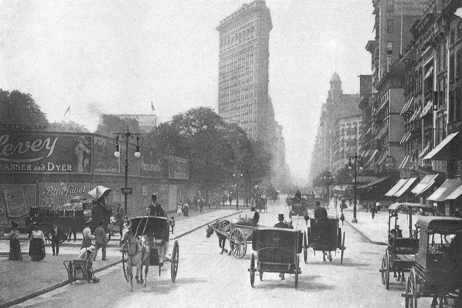

December 9, 1906
Grace Brewster Murray was born in New York City. She was the oldest child of three. Her father, Walter Fletcher Murray, was an insurance salesman. Her mother, Mary Campbell Van Horne, loved to study math and was a housewife..
Grace Brewster Murray was born in New York City. She was the oldest child of three. Her father, Walter Fletcher Murray, was an insurance salesman. Her mother, Mary Campbell Van Horne, loved to study math and was a housewife..
Growing up, Grace was educated at private schools for girls: Graham School and Schoonmakers School, both in New York City, and Hartridge School in Plainfield, New Jersey.
Grace attends Vassar University, an all women's college. Most women took classes in "Motherhood" or "Husbands and Wives", but Grace graduated with honors degrees in both physics and mathematics. After Vassar, Grace enrolled at Yale University to study mathematics.
Grace Murray marries Vincent Foster Hopper, who was an English teacher from the University of New York, and becomes Grace Murray Hopper.
In 1930, Grace earns a Master's degree in Mathematics from Yale University, and in 1934 she earned her Phd. Grace was the only woman at Yale from 1934-1937 to get a master's degree in mathematics. This was her original transcript.
Grace taught math at Vassar College throughout her graduate studies. Many think that it was her studying and teaching mathematics that made her so advanced at working on computers.
Grace and her husband, Vincent Hopper, separate and officially divorce a few years later in 1945. She keeps the last name of Hopper.
The U.S. is attacked by the country of Japan at Pearl Harbor, Hawaii, forcing the US to enter World War II.
In 1943, Grace was sworn into the United States Navy to serve for her country in the second World War. For more details about her work during the war, visit our WWII page:
After WWII ended in 1946, Grace had to end her active military service when the Navy declined her request for a regular commission due to her age, but she remained in the US Navy Reserves. For 3 years, she continued to work on the MARK II computer and MARK III computer under Navy contracts. At the end of her three-year term as a research fellow, she left Harvard University because there were no positions for women.
Hopper joined the Eckert-Mauchly Computer Corporation in Philadelphia as a senior mathematician in 1949. The company built the first electronic computer (ENIAC) under army contracts. Grace was assisting to develop the Universal Automatic Computer (UNIVAC I). This was the first commercial electronic computer.

Grace developed the first computer compiler called A-0, which translated mathematical code into machine-readable code which was an important step in the direction of creating the programming languages we use today.
Rather than using symbols, Hopper proposed the idea of writing programs in words, but she was told her idea would not work. However, she continued working on an English-language computer compiler.
Grace invents FLOW-MATIC, the first programming language to use word commands. Unlike FORTRAN or MATH-MATIC, which used mathematical symbols, FLOW-MATIC used regular English words and was designed for data processing purposes.
Grace took part in a conference that aimed to develop a common business language that could be used across industries and sectors. The finished product was COBOL, short for “common business-oriented language.” Although many people contributed, Grace is usually credited with its invention. By the 1970s, COBOL was the “most extensively used computer language” in the world.
Grace is forced to retire (because of her age) from the Navy Reserve at the age of 60. She had achieved the rank of Commander by this point. She said leaving the Navy "was the saddest day of my life."
The Navy quickly realized they needed Grace, so she was recalled to active duty for a new project to help standardize the Navy’s multiple computer languages and programs. The project was supposed to last 6 months, but the length of the assignment was changed to "indefinite" so Grace could complete her goal.
Grace served as Director for the Chief of Naval Operations’ Navy Programming Languages Group. She worked on high-level computing research and development, including formula translation, code optimization, and subroutines. She also educated thousands of people on the use of compilers and computer language standardization via speaking engagements throughout the world.
Grace is promoted to Captain, which was rare for reservists.
Grace was appointed Special Advisor to the Commander of the Naval Data Automation Command, heading the Training and Technology Directorate.
In 1983, she was promoted to Commodore. In 1985, she became Admiral Grace Hopper when the commodore rank was merged with rear admiral. It was almost unheard of for a woman to reach this rank.
Grace retires from the Navy for the final time. At the time of her retirement, she was the oldest active duty officer in service, at 79 years old. Her ceremony was held on the oldest Naval battleship, the USS Constitution.
Grace then became a senior consultant to Digital Equipment Corporation, where she worked into her 80s.
President George Bush awarded Grace the National Medal of Technology “for her pioneering accomplishments in the development of computer programming languages that simplified computer technology and opened the door to a significantly larger universe of users.” The award recognizes her as a computer pioneer, who spent a half century helping keep America on the leading edge of high technology. She was the first woman to receive the nation’s highest technology award as an individual.
Grace Hopper passed away, at the age of 85, in her sleep on New Year's in 1992. She is buried at Arlington National Cemetry with full military honors.

The Navy commissioned the USS Hopper (DDG 70)—a high-tech destroyer called “Amazing Grace” by its crew. The battleship’s official motto is Aude Et Effice (Dare And Do). She was only the second woman to ever have a Navy ship named after her.
Grace is posthumously (after death) awarded the Preidential Medal of Freedom by President Barack Obama, the highest honor a civilian can earn in the US.
The United States Naval Academy named its new center for cyber security Hopper Hall.